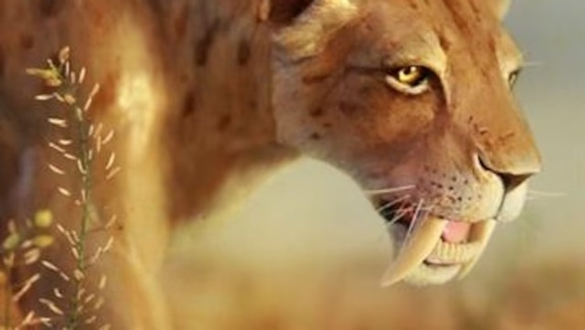
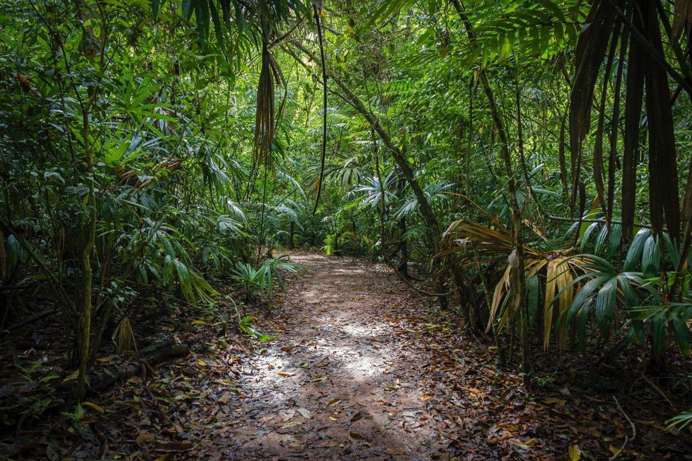
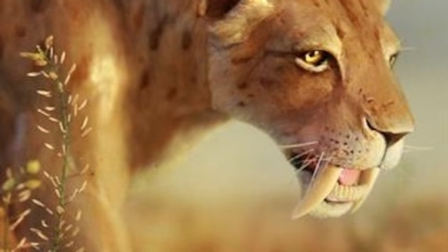

Tales of the Giant
A fierce predator, Smilodon populator roamed South America during the Pleistocene era

The National Geographic Photo Ark is a multiyear project creating intimate portraits of every species in captivity to inspire people to help ensure their survival in the wild.
Sign up for more inspiring photos, stories, and special offers from National Geographic.
 Sign up
A fierce predator, Smilodon populator roamed South America during the Pleistocene era
 Animals
Animals